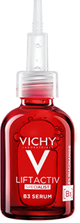
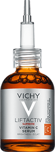
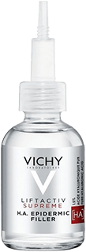
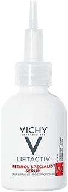

REKOMENDOWANY PRZEZ
POLSKIE TOWARZYSTWO MEDYCYNY EsTETYCZNEJ
I ANTI-AGING
Działanie: skuteczna redukcja przebarwień i zmarszczek
-
Skuteczność od pierwszego zastosowania:
skóra jest wygładzona i pełna blasku -
Dzień po dniu przebarwienia
i zmarszczki są zredukowane,
a koloryt skóry wyrównany -
Formuła inspirowana
nieinwazyjnymi zabiegami
medycyny estetycznej -
Silne składniki aktywne działają na różnych
poziomach naskórka, aby skutecznie
zredukować przebarwienia
Dermatolodzy potwierdzają
aż do -71% przebarwień(1)
Silne składniki
aktywne
Odkryj serum dopasowane do Twoich potrzeb
REDUKCJA PRZEBARWIEŃ
Liftactiv Specialist B3 przeciw przebarwieniom
ROZŚWIETLENIE I BLASK
Liftactiv Supreme Witamina C
Serum
Serum
Przeciwstarzenie, przebarwienia, jednolity koloryt skóry.
Przeciwstarzenie, szarość, zmęczenie skóry, zmarszczki
Redukuje przebarwienia, redukuje zmarszczki, wyrównuje koloryt skóry.
Widocznie rozświetla, wygładza strukturę skóry, nadaje efekt ujędrnienia, redukuje drobne zmarszczki
Lekka, szybko się wchłania, beztłuszczowa.
Bezzapachowa, nietłusta nieklejąca się. Nie wybłyszcza.
PIERWSZE OZNAKI STARZENIA
Liftactiv Epidermic Filler z kwasem hialuronowym
ZMĘCZENIE SKÓRY, ZMARSZCZKI
Liftactiv Retinol Specialist na noc
Serum
Serum
Przeciwstarzenie, delikatne linie, zmarszczki
Przeciwstarzenie, ujędrnienie skóry, zmarszczki
Wypełnia kontur twarzy i oczu, stopniowo redukuje zmarszczki i drobne linie
Zmniejsza pory, wyczuwalnie ujędrnia i wygładza, dając efekt odnowionej skóry
Lekka, szybko się wchłania, płynna.
Bezzapachowa, szybko się wchłania, lekka, mleczna, bez efektu przetłuszczania.

REDUKCJA PRZEBARWIEŃ
Liftactiv Specialist B3
przeciw przebarwieniom
ROZŚWIETLENIE I BLASK
Liftactiv Supreme
Witamina C
PIERWSZE OZNAKI STARZENIA
Liftactiv Epidermic Filler
z kwasem hialuronowym
ZMĘCZENIE SKÓRY, ZMARSZCZKI
Liftactiv Retinol
Specialist na noc
Serum
Serum
Serum
Serum
Przeciwstarzenie,
przebarwienia, jednolity
koloryt skóry.
Przeciwstarzenie, szarość,
zmęczenie skóry,
zmarszczki
Przeciwstarzenie, delikatne
linie, zmarszczki
Przeciwstarzenie, ujędrnienie skóry, zmarszczki
Redukuje przebarwienia,
redukuje zmarszczki,
wyrównuje koloryt skóry.
Widocznie rozświetla,
wygładza strukturę skóry,
nadaje efekt ujędrnienia,
redukuje drobne
zmarszczki
Wypełnia kontur twarzy i oczu, stopniowo redukuje
zmarszczki
i drobne linie
Zmniejsza pory, wyczuwalnie ujędrnia i wygładza, dając
efekt odnowionej skóry
Lekka, szybko się wchłania, beztłuszczowa.
Bezzapachowa, nietłusta nieklejąca się. Nie wybłyszcza.
Lekka, szybko się
wchłania, płynna.
Bezzapachowa, szybko się wchłania, lekka, mleczna,
bez
efektu przetłuszczania.
Rutyna redukująca przebarwienia i zmarszczki
LIFTACTIV SPECIALIST B3 SERUM
Skoncentrowane serum redukujące przebarwienia i zmarszczki z 5% niacynamidu.
Dodaj do koszykaLIFTACTIV B3 KREM PRZECIW PRZEBARWIENIOM SPF 50
Krem na dzień korygujący oznaki utraty kolagenu w skórze.
Dodaj do koszykaLIFTACTIV collagen specialist krem na noc
Wzmacniający krem na noc, który koryguje oznaki utraty kolagenu w skórze.
Dodaj do koszykaCzęsto zadawane pytania dotyczące serum do twarzy
Jak nakładać serum do twarzy?
W przeciwieństwie do kremów i środków nawilżających, serum do
twarzy należy nakładać w małych ilościach, ponieważ są bardzo
skoncentrowane. Przed nałożeniem na skórę należy oczyścić ręce i
twarz. Nałóż 2 lub 3 krople serum na opuszki palców i delikatnie
wklepuj ruchami od góry, aż do całkowitego wchłonięcia.
Jakie jest najlepsze przeciwzmarszczkowe serum do twarzy Vichy?
Najlepsze sera do twarzy dla starzejącej się skóry to te z gamy
Liftactiv, ponieważ ich formuły stworzone są ze skoncentrowanych
istotnych składników dermatologicznych, które działają na drobne
linie i zmarszczki, brak jędrności oraz dodają blasku skórze.
W jakim wieku stosować serum do twarzy?
Serum do twarzy działa na różne problemy skórne, takie jak
trądzik, przetłuszanie się lub wysuszanie skóry, przebarwienia
lub zmarszczki i drobne linie. Możesz rozpocząć stosowanie serum
w wieku 20 lat i kontynuować je przez resztę życia, dostosowując
serum do problemów skórnych.
(1) Ocena kliniczna, 44 kobiety po 2 miesiącach stosowania, średni
rezultat dla intensywności przebarwień: -29%, średni rezultat dla 33%
badanych kobiet: -71%.
(2) Symulacja efektu uzyskanego w ocenie klinicznej przez 33% badanych
kobiet po 2 miesiącach.
(3) Żródło: IQVIA Pharmatrend oraz IQVIA e-Pharmacy Tracker – 2018,
2019, YTD 10/2020 pod względem wartości sprzedaży. © 2020 IQVIA oraz
podmioty powiązane. Wszystkie prawa zastrzeżone.